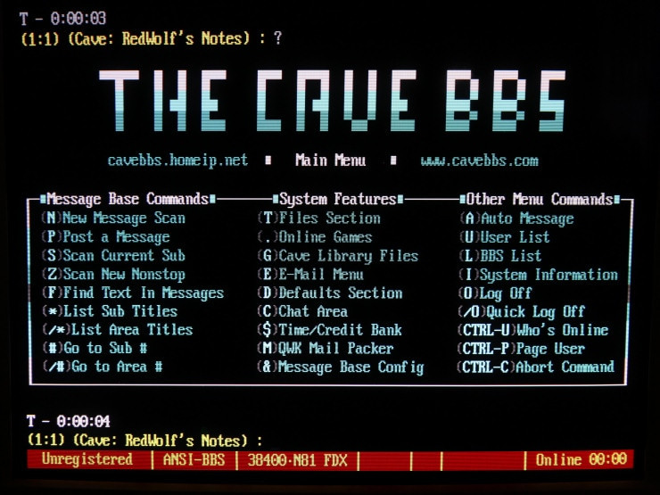
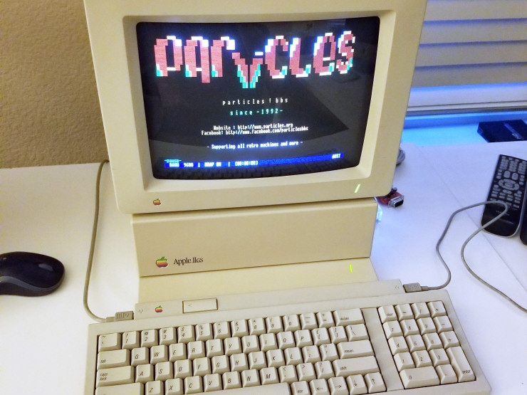

BBS
Un BBS (en español Sistema de Tablón de anuncios) es un software que fue popular en la década de los 80' y 90' para redes de computadoras. Les permitía a los usuarios participantes poder conectarse a través de línea telefónica a una red en donde se podían ver y consultar distintas informaciones que colocaban usuarios participantes.
Se lo puede visualizar como una red de ordenadores por la cual un grupo de personas compartían datos e información, actualmente es fácil acceder por telnet a través de internet a servidores y realizar funciones tales como descargar software, datos, leer noticias, intercambiar mensajes con otros usuarios a través del correo, disfrutar de juegos en línea, leer los boletines, etc.
BBS de Argentina
Dentro de los BBS más famosos en Argentina, podemos destacar:
- MP Online BBS
- Canopus
- FidoNet AR
MP Online fue el BBS de la década del 90's, previo al lanzamiento de Internet Comercial, que era mantenido por la editorial de las revistas COMPUMAGAZINE y PC USERS.